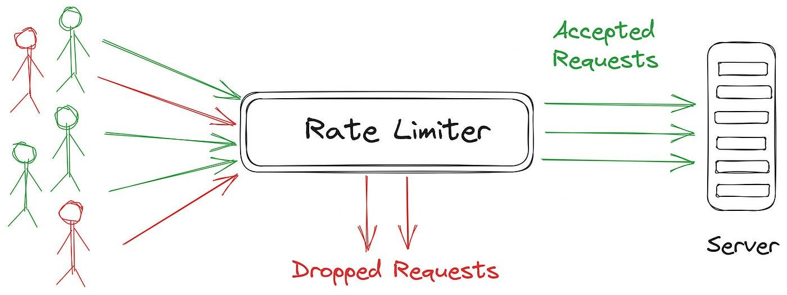
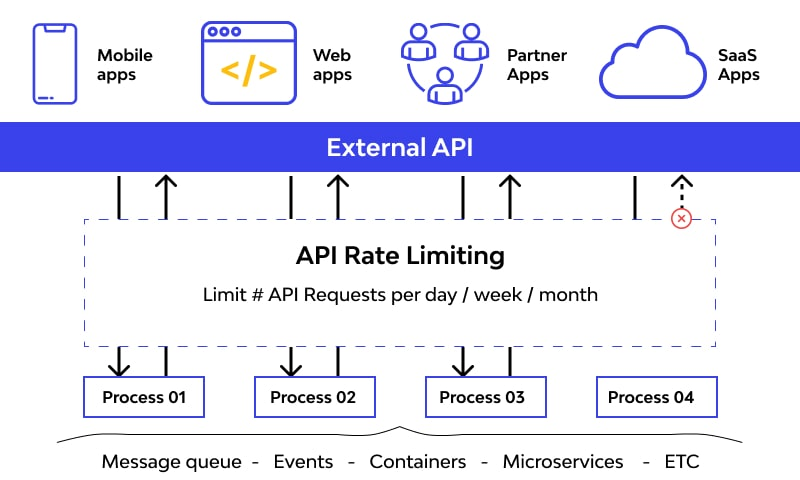
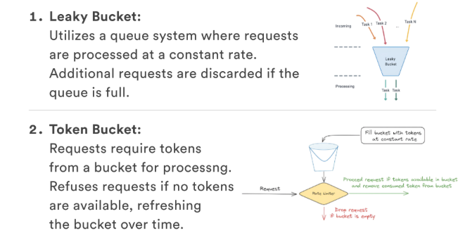
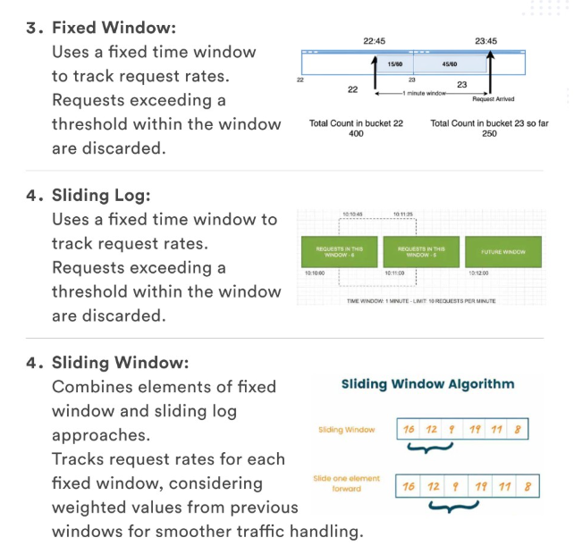

System Design Mastery
Master scalable systems with premium insights
🚦 Rate Limiting: Controlling Request Flow
1️⃣ What is Rate Limiting?
Rate Limiting is a mechanism that controls how many requests a user can send to a system within a given time window.
Example:
- 📊 Max 100 requests per minute per user
- 🚫 Extra requests are blocked or delayed
- ⏳ Returns HTTP 429 (Too Many Requests) status

📊 How rate limiting protects servers from overload and abuse
2️⃣ Why Does Rate Limiting Exist?
Rate limiting exists to:
- 🛡️ Prevent server overload from excessive traffic
- ⚖️ Ensure fair usage among users and prevent monopolization
- 🚨 Stop brute-force attacks and DDoS attempts
- 💰 Reduce infrastructure costs by controlling traffic spikes
Without it: One user or bot can consume all system resources and deny service to legitimate users.

📊 How rate limiting protects servers from overload and abuse
3️⃣ What Breaks Without Rate Limiting?
Without rate limiting:
- ⚠️ Servers can be overwhelmed by excessive requests
- 🔓 System becomes vulnerable to brute-force and DDoS attacks
- 💥 Single bot can crash the entire system
- 😞 All legitimate users are affected by the downtime
📌 Real-World Example:
One bot sends 1 million requests → system crashes → all users affected ❌. This could cost thousands in revenue and damage reputation.

🚦 Rate limiting enforcing request limits and blocking excess traffic
4️⃣ When to Use Rate Limiting / When NOT to Use
✅ When to Use:
- 🌐 Public APIs
- 🔐 Login & OTP endpoints
- 💳 Payment APIs
- 📈 High-traffic applications
- 🤖 Bot detection
- 🔍 Search endpoints
❌ When NOT to Use:
- 🔒 Internal trusted systems
- 📡 Low-traffic applications
- ⚙️ One-time batch processing
- 🎯 Critical business transactions
- 📦 File uploads/downloads
📋 Common Examples:
- "5 login attempts per minute" — prevents brute-force attacks
- "100 API calls per minute per user" — ensures fair usage
- "10 password reset emails per hour" — prevents spam
- "1 payment request per 10 seconds" — fraud prevention
5️⃣ One Common Mistake: Setting Limits Too Strictly
🚨 The Problem:
- 😢 Legitimate users get blocked
- 📱 Mobile apps retry automatically, creating cascading failures
- 😤 Poor user experience and frustration
- ⭐ Negative reviews and user churn
👉 Always tune limits based on real usage patterns. Monitor and adjust regularly.
6️⃣ Popular Rate Limiting Algorithms

⏱️ Token Bucket & Leaky Bucket

🪟 Sliding Window & Fixed Window
⏱️ Token Bucket
Allows bursts of traffic. Tokens accumulate over time. Most flexible and popular.
📊 Sliding Window Log
Tracks exact timestamps of requests. Most accurate but memory intensive.
🪟 Sliding Window Counter
Balances accuracy and efficiency. Good compromise between other methods.
⏳ Leaky Bucket
Smooth rate limit. Requests are processed at constant rate. Good for fairness.
📚 Learn More
Check out this page for detailed algorithm explanations with examples and comparisons.
7️⃣ Real App Connections
🛒 E-commerce
- ✋ Limit checkout attempts
- 🔍 Protect search APIs from crawlers
- 🎉 Prevent abuse during flash sales
💬 Chat App
- 💬 Limit message sending per second
- 🚫 Prevent spam and flood attacks
- 📱 Control typing indicators frequency
💳 Payment Systems
- 🔐 Strong limits on payment endpoints
- 🚨 Protect against fraud attempts
- ⚠️ Alert on unusual patterns
8️⃣ Why Not Use It Everywhere?
Rate limiting adds overhead because:
- ⏱️ Adds latency to every request (state lookup, counter updates)
- ⚙️ Increases complexity in infrastructure
- 💾 Requires distributed state (Redis, etc.)
👉 Use it only where misuse is possible (public APIs, authentication, payments).
📚 Learn More
Check out this page for detailed comparison of Rate Limiting vs Throttling with examples, analogies, and real-world use cases.
🧠 Summary
Rate limiting restricts the number of requests a client can make in a given time window to protect systems from overload and abuse.
Without it, systems are vulnerable to traffic spikes, brute-force attacks, and DDoS attempts that can cause complete system failure.
It should be applied selectively to sensitive or public endpoints where misuse is likely, while avoiding over-limiting that hurts legitimate user experience.
💡 Pro Tip: Rate Limiting Tools
Popular Tools & Services:
🔴 Redis
Sliding window counter, Token bucket. Most flexible & widely used.
🟦 NGINX
Built-in rate limiting. Good for HTTP/API servers.
☁️ Cloud Services
AWS API Gateway, Google Cloud Armor, CloudFlare.
🔧 Framework Libraries
Express rate limit, FastAPI Slowapi, Django throttling.
Best Practice: Combine multiple layers — application-level + infrastructure-level + edge CDN — for defense in depth.